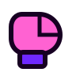
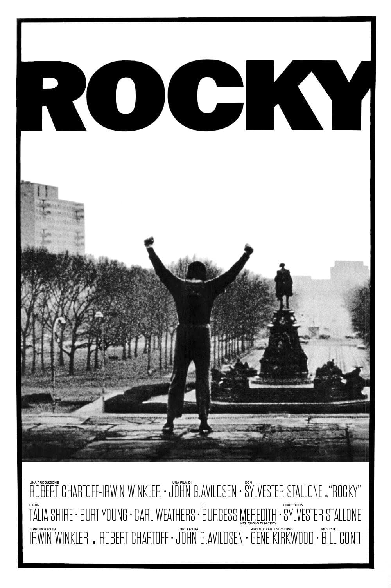
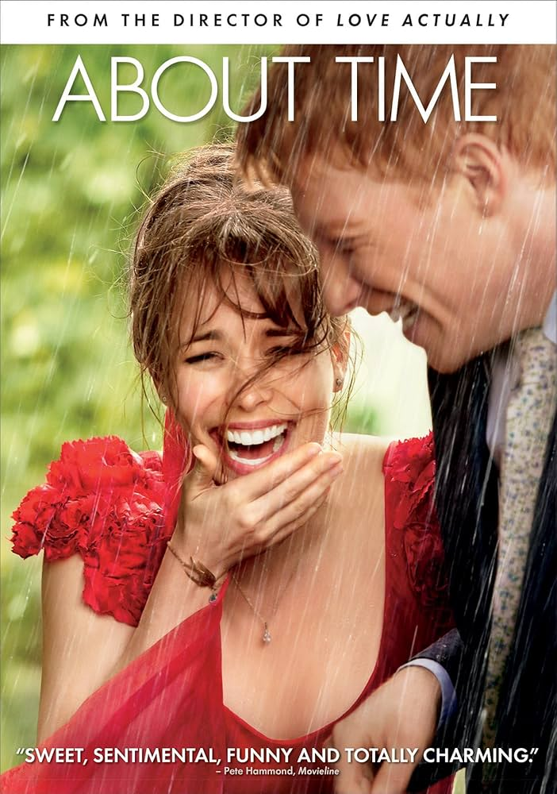
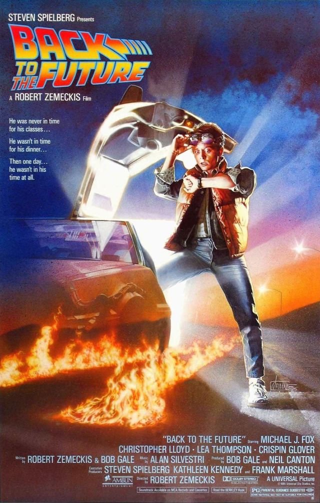
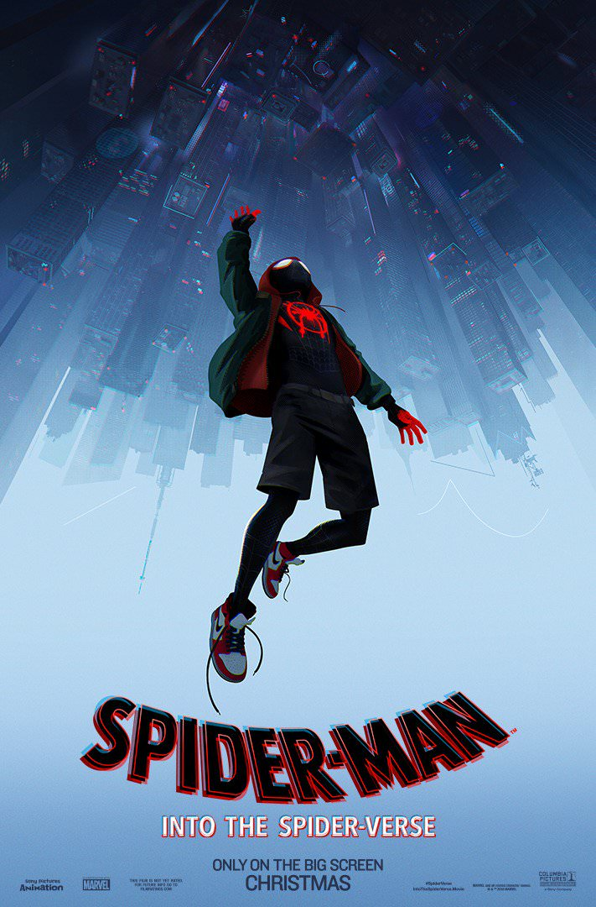

Fútbol
Me gusta el fútbol ya que desde niño creci viendolo y practicandolo mi equipo favorito es el Barcelona<./p>
Actualmente viendo: SOBRE MÍ
Me llamo Kevin Angel Gutierrez Sanchez y soy alumno de la Facultad de Ingeniería de la UNAM. Esta página menciono mis gustos personales con un estilo visual inspirado en computadoras, ventanas antiguas, iconos pixelados y páginas web clásicas de los 80s y 90s.
Me gusta el fútbol, las artes marciales mixtas, el box, el kickboxing, los perfumes, las películas y aprender cosas nuevas.
Me gusta el fútbol ya que desde niño creci viendolo y practicandolo mi equipo favorito es el Barcelona<./p>
También me gustan las artes marciales mixtas, por eso veo la UFC. Mi peleador favorito de MMA es Ilia Topuria.
Actualmente practico kickboxing,aun que apenas empece a practicarlo este semestre le he agarrado mucho gusto.

Además del MMA, también me gusta el box. Mi boxeador favorito es Canelo Álvarez.
A
<img src="">Me gustan los perfumes y actualmente tengo una colección de 25 perfumes. Ya que me gusta desccubrir nuevos aromas y oler bien.
Estoy estudiando italiano porque uno de mis objetivos es volver a viajar a Italia y conocer más sobre su cultura, ciudades y estilo de vida.
GUSTOS MUSICALES
En general, escucho música variada: reggaetón, indie, rock alternativo, pop, corridos tumbados, y electrónica mi playlist combina artistas actuales con música más clásica y alternativa.
PELÍCULAS FAVORITAS
Uno de mis pasatiempos favoritos es ver películas y estas son algunas de mis favoritas:

Rocky I
About Time
Volver al Futuro
Spider-Man: Into the Spider-Verse